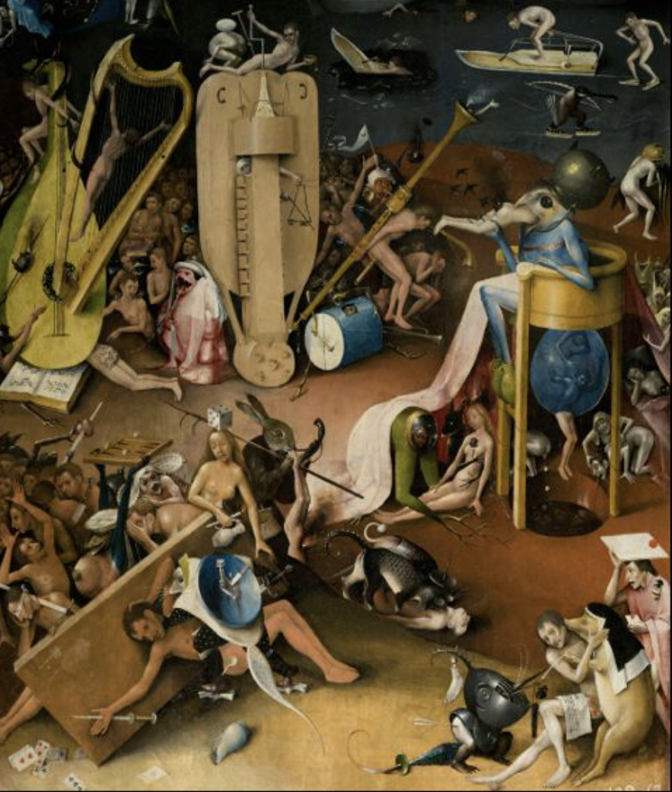
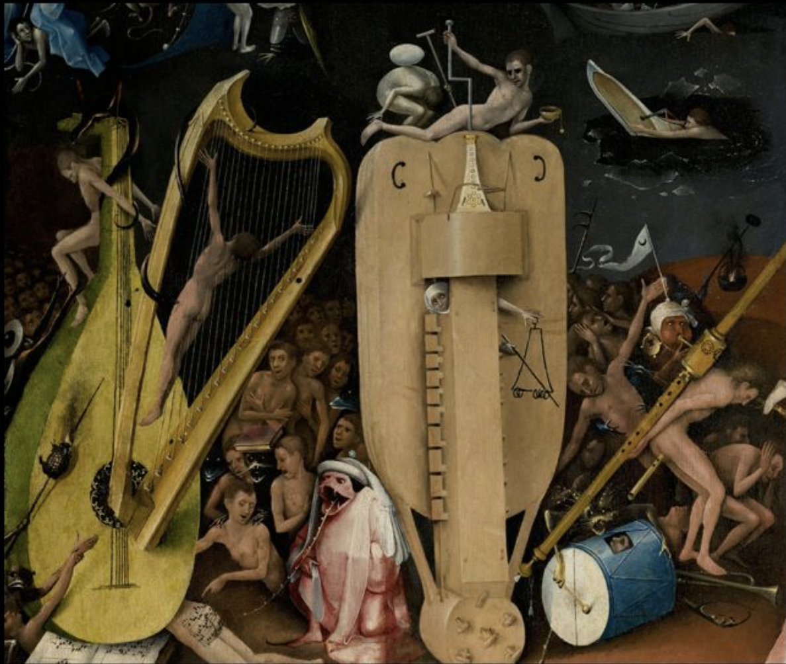

The foreground: earth, with multiple pageants of the presumption of earhty authority and its catastophix results.
As in the case of the first two panels, the bottom portion of the panel represents earth and its conditions; man and the influences he operates under.


The overall theme: the perversion of God's authority by man's authority
Sheild with pierced hand = meaning ok society
Hand = hand of god, symbol of his word, is severed and stabbed witgh a knife. blue sheild = materialism and earhtly influences
Dice at its figertips indicate that man plays with God's words and laws as though they were a game
eve is now a drunkard and a gambler.
From here on, she slides even further downhill
A man under the influence of mistaken religious authourites
Signing his soul away, perhaps to the devil himself.
The Pageant of Earthly Justice
A group of musicians, playing grotesquely oversized instruments. Like in the Center panel, bosch uses outsized objects to represent producrs on man's imagination.
What we see is an attemot by a man to ompose the music of human justice, produces by the corruption of his own intelligence, within life. The whole process becomes a mockery of divine justice.
The judge--clothed in pink, to indicate he thinks he's God -- lashes out the musical letter of the laws on the butt of another defendant with his tonge.
We are not just headed for Hell; we are in a hurry to get there, ice-skating, as though it were a leisure activity.
The more effort we make, the faster we go. And the ones with better eqipement get there first. Its not just a path to divine judgemebnt; it's a race.